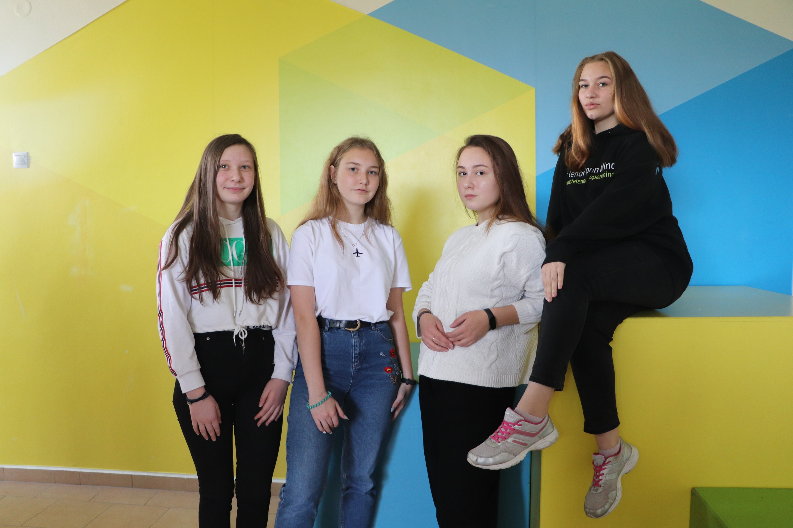

Краткое описание проекта:
Мы создаем общую базу проектов, в которой образовательные учреждения (школы, колледжи и вузы) могут хранить результаты проектной деятельности своих учеников или студентов. За время ЯИ мы выполнили первый этап работ – шаблон для отдельной организации (на примере ЦРОДа). Этот шаблон получит образовательное учреждение после регистрации в базе проектов.
